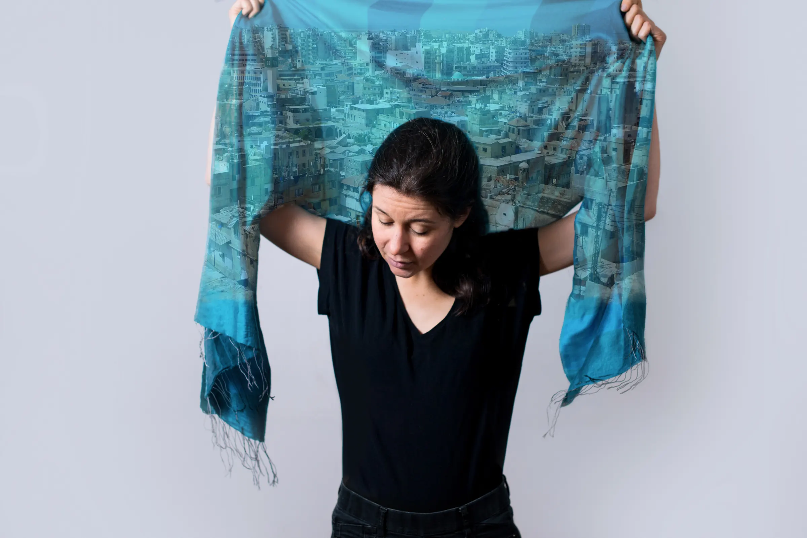
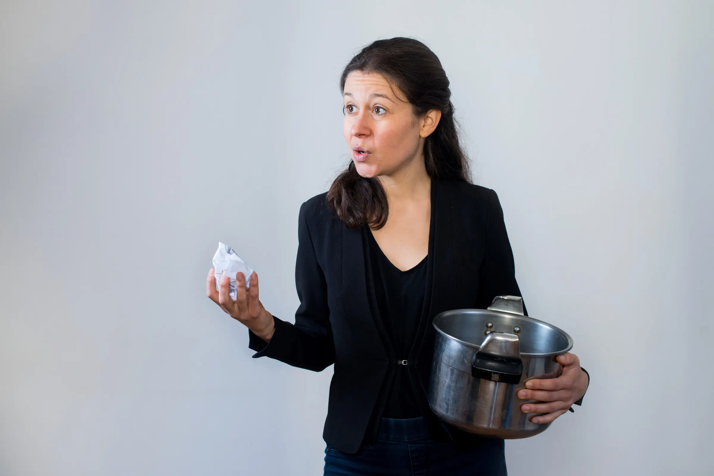

- Création
- 2021
- Âge
- Dès 14 ans
- Durée
- 1 h + échange
- Au plateau
- 1 artiste
- Prochaine date
- à programmer
L’histoire
L’histoire
Maguelone a vingt ans et un désir fou : celui de sauver le monde. Après un voyage initiatique entre Israël et Palestine, elle s'investit dans la coopération internationale au Moyen-Orient. Partie vivre au Maroc, au Liban et en Irak, elle devient experte en protection des personnes vulnérables et en prévention des conflits. Entre 2011 et 2021, elle travaille successivement en Ambassade de France, aux Nations Unies et en ONG. Elle assiste au Printemps arabe, à la reprise de Mossoul à l'État islamique et à la création de nombreux camps de réfugiés.
Dix ans plus tard, Maguelone revient sur son parcours au travers d'une pièce de théâtre. Seule en scène, elle propose des clefs de lecture des événements dont elle a été témoin. Elle dresse le portrait de gens qui ont croisé sa route et dévoile son cheminement intérieur.
Ce spectacle est une invitation à aller à la découverte de l'autre et à s'enrichir de sa différence. Tour à tour tragique et drôle, Maguelone fait vivre à travers elle les rencontres et les événements qui ont façonné sa vision du monde.
Durée : 1 h, suivie d'un temps d'échange.
Spectacle créé en résidence à la Maison Magis (Paris).

En images
Galerie
Image d’ambiance
Dix ans de coopération internationale au Moyen-Orient, racontés seule en scène par celle qui les a vécus.
Distribution
L’équipe
du spectacle
- Texte
- Maguelone Girardot et Guillaume Lamort de Gail
- Mise en scène
- Guillaume Lamort de Gail
- Photos
- Eric Magnan
- Avec
- Maguelone Girardot
Pour les programmateurs
Fiche
express
Agenda
Les dates
Dates à venir et représentations passées, depuis la création en 2021.
À venir
Aucune date annoncée pour le moment. Ce spectacle est disponible pour vos programmations.
Programmer ce spectacleReprésentations passées (33)
Dans la presse